일반기계기사 (2002-05-26 기출문제)
1과목: 재료역학
1. 굽힘모멘트 M과 비틀림모멘트 T를 받는 축의 상당 굽힘모멘트 Me는?
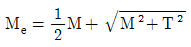
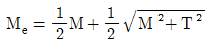
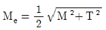
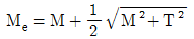
(정답률: 37%)

2. 지름이 2cm인 원형 단면의 중립축에 대한 단면계수는?
- 50.2cm2
- 50.2cm4
- 0.785cm3
- 0.785cm4
(정답률: 9%)
3. 길이가 L인 외팔보의 중앙에 집중하중 P가 작용할 때 자유단에서의 최대 처짐은?
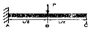
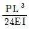
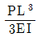
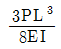
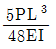
(정답률: 38%)
4. 그림과 같은 양단 고정보가 왼쪽 지점에서부터 거리 L1인 위치에서 비틀림모멘트 T를 받고 있다. 이때 양단에서의 저항 모멘트 T1 및 T2 사이의 관계는 어떻게 되는가?
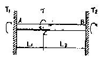
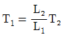
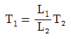
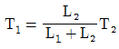
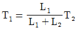
(정답률: 12%)
5. 안지름이 150mm이고, 관벽의 두께가 10mm인 알루미늄 파이프가 관내의 유체로부터 2MPa의 압력을 받고 있다. 파이프 내에서의 최대 인장응력은 몇 MPa인가?
- . 15
- 7.5
- 25
- 30
(정답률: 44%)
6. 안지름 25mm, 바깥지름이 30mm인 강철관에 10kN의 축인장 하중을 가할 때 인장응력은 몇 MPa인가?
- 14.2
- 20.3
- 46.3
- 145.5
(정답률: 55%)
7. 다음 그림과 같은 4각형 요소에 σx=300MPa, σy=200MPa이 작용하고 있을 때 그 재료 내에 생기는 최대 전단응력과 그 방향은?
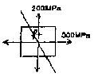
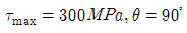
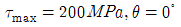
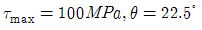
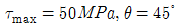
(정답률: 46%)
8. 길이 ℓ인 양단 고정보에 등분포하중(ω)이 작용할 때, 최대 굽힘 모멘트가 일어나는 위치와 그 크기는?
- 위치: 보의 중앙, 크기 ωℓ/24
- 위치: 보의 중앙, 크기 ωℓ2/12
- 위치: 고정단, 크기 ωℓ2/24
- 위치: 고정단, 크기 ωℓ2/12
(정답률: 10%)
9. 다음 그림과 같은 균일한 단면의 보 AC가 하중 P를 받고 있을 때, C점에서의 처짐을 길이 L과 굽힘강성 EI의 항으로 구한 것은?
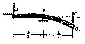
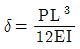
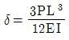
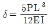
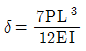
(정답률: 5%)
10. 평면응력 상태에서 σx=1750MPa, σy=350MPa, τxy=-600 MPa 일 때 최대 전단응력은?
- τmax=634MPa
- τmax=740MPa
- τmax=826MPa
- τmax=922MPa
(정답률: 45%)
11. 그림과 같은 직사각형 단면에서 y1=h/2의 위쪽 면적(빗금 친 부분)의 중립축에 대한 단면 1차 모멘트 Q는?
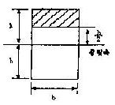
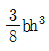
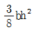
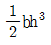
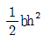
(정답률: 45%)
12. 그림과 같은 단순지지보가 등분포하중 ω를 받고 있을 때, 보의 중앙을 들어 올려서 양단과 동일한 수준으로 했다소 하면 중앙지지점의 지지력 P는?
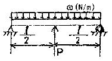
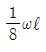
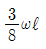
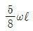
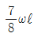
(정답률: 35%)
13. 오른쪽 그림과 같은 도형에서 도심의 위치
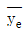
는 얼마인가?(문제 오류로 원본 그림 상태가 좋지 못합니다. 정답은 3번입니다.)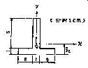
- 1.25cm
- 1.5cm
- 2cm
- 2.5cm
(정답률: 52%)
14. 주응력에 대한 설명 중 틀린 것은?
- 주응력 상태에서 전단응력은 0이다.
- 주응력은 전단응력이가.
- 주응력 상태에서 수직응력은 최대와 최소를 나타낸다.
- 평면응력에서 주응력은 2개이다.
(정답률: 53%)
15. 지름 70mm인 환봉에 20MPa의 최대응력이 생겼을 때의 비틀림모멘트는 몇 kNㆍm인가?
- 4.50
- 3.60
- 2.70
- 1.35
(정답률: 44%)
16. 그림과 같은 굽은 보에서 A점의 굽힘모멘트는 절대값으로 몇 kNㆍm인가?
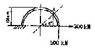
- 73.2
- 82.4
- 63.0
- 65.7
(정답률: 6%)
17. 그림과 같이 탄성 막대 끝에 매달려 있는 스프링에 하중 10kN이 작용할 때, 이 시스템 전체에 저장되는 탄성 변형에너지는? (단, 막대의 단면적은 2cm2, 탄성계수는 10GPa, 길이는 0.5m이고 스프링의 스프링 상수는 500kN/m이다.)
- 37.5 Nㆍm
- 88.5 Nㆍm
- 112.5 Nㆍm
- 153.5 Nㆍm
(정답률: 15%)
18. 포아송비 0.3, 탄성계수 200GPa인 재질로 만든 단면적 4cm2인 균일봉이 40kN의 압축하중을 받으면 봉의 단면적 변화량은 얼마인가?
- 0.012cm2증가
- 0,024cm2증가
- 0.0012cm2증가
- 0.0024cm2증가
(정답률: 7%)
19. 120mm×80mm(b×h)의 직사각형 단면의 최소 회전반지름은?
- 0.034m
- 0.046m
- 0.023m
- 0.017m
(정답률: 18%)
20. 원래 크기가 a×2a인 얇은판에 그림과 같은 균일한 분포력이 작용할 때 AB의 길이는 얼마가 되겠는가? (단, 재료의 탄성계수 E, 포아송 비 ν)
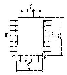
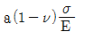
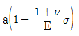
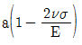
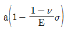
(정답률: 11%)
2과목: 기계열역학
21. 에너지의 소비 없이 연속적으로 동력을 발생시키는 기계가 있다면 이 기계는 어떤 종류인가?
- . 증기원동소
- 오토기관
- 제1종 연구기관
- 카르노기관
(정답률: 5%)
22. 1kg의 공기가 50℃를 유지하면서 등온팽창하여 외부에 250kJ의 일을 하였다. 이 변화에서 엔트로피의 변화량은 몇 kJ/kgㆍK인가?
- 0.77
- 0.93
- 1.5
- 15.4
(정답률: 48%)
23. 공기를 동작유체로 하는 카르노사이클기관을 설계하는데 저온 열원의 온도는 15℃이다. 이 기관의 열효율을 70%이상이 되게 하려면 고온열원의 온도를 어떻게 하는 것이 좋은가?
- 288℃이상
- 687℃이상
- 288℃이하
- 687℃이하
(정답률: 32%)
24. 105Pa, 15℃의 공기가 n=1.3인 폴리트로프 과정으로 변화하여 7×105Pa로 압축되었다. 압축 후의 온도는?
- 187℃
- 193℃
- 165℃
- 178℃
(정답률: 53%)
25. 피스톤이 장치된 실린더 속에 있는 압력 150kPa의 공기가 정압과정에 따라 1L에서 2L로 팽창했을 때 이 계가 한 일은?
- 15J
- 150J
- 30J
- 300J
(정답률: 50%)
26. 랭킨 사이클을 턴빈 입구 상태와 응축기 압력을 그대로 두고 재생사이클로 바꾸었다. 재생 사이클의 특징을 원래의 랭킨 사이클에 비교해서 말한 것 중 틀린 것은?
- 턴빈일이 크다
- 사이클 효율이 높다
- 응축기의 방열량이 작다
- 보일러에서 가해야 할 열량이 작다.
(정답률: 21%)
27. 계가 정적과정으로 상태1에서 상태2로 변화할 때 열역학 제 1법칙을 바르게 설명한 것은?
- U1-U2=Q12
- U2-U1=W12
- U1-U2=W12
- U2-U1=Q12
(정답률: 53%)
28. 체적 0.5m3의 용기에 액체상태와 증기상태의 물 2kg이 들어있으며, 압력 0.5MPa에서 평형을 이루고 있다. 용기 내의 액체상태 물의 질량은? (단, 0.5MPa에서 수증기 포화액의 비체 적은 0.001093m3/kg, 포화증기의 비체적은 0.3749m3/kg이다.)
- 0.3788kg
- 1.6659kg
- 1.3318kg
- 0.6682kg
(정답률: 7%)
29. 그림에서 A점은 무엇을 나타내는가?
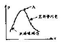
- 임계점
- 삼중점
- 승화점
- 응고점
(정답률: 68%)
30. 150kg의 물을 18℃에서 100℃로 가열하는데 필요로 하는 열량은 얼마인가? (단, 물의 비열은 4.2kJ/kgㆍK이다.)
- 51.66MJ
- 53.70MJ
- 56.78MJ
- 58.82MJ
(정답률: 25%)
31. Rankine 사이클로 작동되는 단순증기원동기의 열효율을 바르게 나타낸 것은?
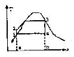
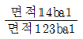
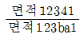
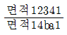
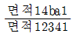
(정답률: 34%)
32. 고열원 500℃와 저열원 35℃ 사이에 열기관을 설치 하였을때, 사이클 당 10MJ의 공급열량에 대해서 7MJ의일을 하였다고 주장한다면 이 주장은?
- 타당함
- 가역기관이면 가능함
- 마찰이 없으면 가능함
- 타당하지 않음
(정답률: 39%)
33. 탄소(C) 1kg이 완전 연소할 때 생성되는 CO2의 양은?
- 2.667kg
- 1.667kg
- 3.667kg
- 4.667kg
(정답률: 14%)
34. 이상적 냉동사이클에서 응축기 온도가 40℃, 증발기 온도가 -10℃이면 성적계수는 얼마인가?
- 5.26
- 4.26
- 2.65
- 6.25
(정답률: 55%)
35. 수직으로 세워진 노즐에서 30℃의 물이 15m/sec의 속도로 15℃의 공기 중에 뿜어 진다면 약 몇 m 올라가겠는가? (단, 부와의 마찰에 의한 에너지 손실은 무시한다.)
- 5.8
- 0.8
- 23
- 11.5
(정답률: 50%)
36. 그림과 같은 낸동 사이클의 성능계수는 얼마인가? (단, h1=184.62kJ/kg, h2=217.2kJ/kg, h3=59.6kJ/kg, h4=59.6kJ/kg이다.)
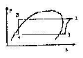
- 4.82
- 0.26
- 3.83
- 0.21
(정답률: 29%)
37. 실린더에 밀폐된 8kg의 공기가 그림과 같이 P1=800kPa. 체적V1=0.27m3에서 P2=350kPa, 체적V2=0.8m3으로 직선적으로 변화하였다. 이 과정에서 공기가 한 일은?
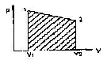
- 354.02kJ
- 304.75kJ
- 382.11kJ
- 380.94kJ
(정답률: 56%)
38. 이상기체의 Joule-Thomson 계수를 바르게 나타낸 것은?
- 0 보다 크다.
- 0 보다 작다
- 0과 같다.
- 알 수 없다.
(정답률: 0%)
39. 25℃, 0.1MPa의 탄소와 산소가 완전 연소하는 비율로 들어 와서 완전 연소한 후 25℃, 0.1MPa 상태로 내보내는 연소실에서 탄소 1kmol 당 393.522kJ의 열이 발생한다. 이 연소실 에 탄소 2kg이 들어갈 때 연소실에서 발생하는 열량은?
- 32,793.5kJ
- 65,587kJ
- 393,522kJ
- 787,044kJ
(정답률: 20%)
40. 다음 보기의 항들 중 상태량과 관련이 앖는 것은?
- 점함수
- 온도
- 내부에너지
- 일
(정답률: 31%)
3과목: 기계유체역학
41. 다음 중 평판에서의 경계층과 관련하여 맞지 않는 것은?
- 평판을 따라 하류로 갈수록 경계층 두께는 커진다.
- 평판에서 멀리 떨어진 곳의 자유 유동 속도가 커질수록 경계층 두께는 커진다.
- 경계층 내부의 유동은 점성유동이다.
- 경계층 외부는 비점성 유동으로 생각할 수 있다.
(정답률: 46%)
42. 어느 바닷 속의 압력이 98.7MPa이다. 이 바닷 속의 깊이는? (단, 해수의 비중량은 10kN/m3이다.)
- 9540m
- 9635m
- 9680m
- 9870m
(정답률: 56%)
43. 뉴턴 유체의 특성을 가장 옳게 설명한 것은?
- 점도가 영이다.
- 밀도가 일정하다.
- 밀도가 온도와 압력의 함수이다.
- 전단응력과 속도구배의 비가 일정하다.
(정답률: 37%)
44. 그림은 선미로부터 물을 분출하여 그 반작용으로 배를 움직 이게 하는 제트 추진 보트의 모습이다. 배의 속력을 u, 물의 분출 속력을 V라 하면 추진 효율이 최대가 될 조건은 어느 것인가?
- u=V
- u=2V
- u=V/2
- u=3V
(정답률: 12%)
45. 이상유체 유동장에서 유동함수가 으로 주어질 때 이 윤동장의 속도 포텐셜은 어떤 것인가? (단, 여시서 C는 임의의 상수이다.)
- -2x2y2+c
- -x2+c
- -2xy+c
- -(x2+y2)+c
(정답률: 37%)
46. 지름 1cm의 원통관에서 0℃의 물이 흐르고 있다. 평균속도가 1.2m/sec이고, 0℃ 물의 동점성계수 v=1.788×10-5m2/sec일 때, 이 흐름의 레이놀즈 수는?
- 2356
- 4282
- 6711
- 7801
(정답률: 50%)
47. 폭이 0.2m인 평행평판(간극4mm) 사이로 점성계수가 1Paㆍ ec인 물이 흐른다고 한다. 1m 흐를 때마다 100kPa의 압력 강하가 일어난다면 물의 유량은 몇 m3/sec인가?
- 2.35×10-4
- 1.7×10-3
- 2.57×10-3
- 1.1×10-4
(정답률: 25%)
48. 개방된 탱크 내에 비중이 0.8인 오일이 가득 차 있다. 오일의 윗면에 101kPa의 대기압이 미치고 있다면, 3m 깊이에서 절대압력은 몇 kPa인가? (단, 물의 비중량은 9790N/m3이다.)
- 25
- 249
- 12.5
- 125
(정답률: 45%)
49. 이상기체에서 음속은 어느 것에 의존하는가?
- 온도
- 압력과 온도
- 체적
- 기체의 팽창계수
(정답률: 5%)
50. 다음과 같은 수평으로 놓인 노즐이 있다. 노즐의 입구는 면적이 0.1m2이고 출구의 면적은 0.02m2이다. 정상, 비압축성이며 점성의 영향이 없다면 출구의 속도가 50m/sec일 때 입구 와 출구의 압력차(P1-P2)는? (단, 이 공기의 밀도는 1.23kg/m3이다.)
- 1.48kPa
- 14.8kPa
- 2.96kPa
- 29.6kPa
(정답률: 32%)
51. 액체의 점성계수를 측정하기 위하여 수조로부터 모세관을 연결하여 관의 한 점으로부터 정압을 측정할 수 있게끔 액주계를 달아 놓았다. 액주계의 높이 H가 나타내는 뜻은?
- 모세관의 길이 L에서 생긴 손실두두와 같다.
- 수조내의 액체가 갖는 에너지를 나타낸다.
- 모세관에 흐르는 액체의 전압(정압+동압)과 같다.
- 모세관에 흐르는 액체의 동압을 나타낸다.
(정답률: 29%)
52. 밀도가 800kg/m3인 유체 내에서 소리의 전파속도가 800m/sec라면 이 유체의 체적탄성계수는?
- 640kPa
- 800kPa
- 512kMa
- 410GPa
(정답률: 15%)
53. 반지름 1m, 높이 2m인 원통용기에 물을 가득 채우고 수직 축을 중심으로 각속도 3rad/sec로 회전운동 할 때, 용기의 중심에서 바닥 면에 작용하는 압력은 몇 bar(gage)인가?
- 45900
- 0.151
- 0.459
- 15100
(정답률: 27%)
54. 밀도 1.6kg/m3인 기체가 흐르는 관에 설치한 피토정압관의 두 단자간의 압력차가 4mmH2O였다면 기체의 속도는 몇 m/sec인가?
- 0.7
- 5.0
- 7.0
- 9.8
(정답률: 39%)
55. 동점성계수가 16×10-6m2/sec인 공기가 평판 위를 4m/sec로 흐르고 있다. 선단으로부터 40cm되는 곳에서의 경계층 두께는 몇 mm인가?
- 63.2
- 6.32
- 0.632
- 0.00632
(정답률: 13%)
56. 안지름이 20cm인 원관에서 층류로 흐를 수 있는 임계 레이놀즈 수를 2100으로 할 때 층류로 흐를 수 있는 최대 평균 속도는 몇 m/sec인가? (단, 관속에서는 동점성계수가 1.8× 10-6m2sec인 물이 흐른다.)
- 18.9
- 1.89
- 0.189
- 0.0189
(정답률: 43%)
57. 동점성계수 1.0×10-6m2/sec인 물이 지름 10cm인 관속을 유속 4m/sec로 흐른다. 동점성계수 2.0×10-6m2/sec인 어떤 유체가 지름 5cm인 관속을 흐를 때, 두 경우가 완전히 상사가되기 위한 이 유체의 유속은 몇 m/sec인가?
- 1
- 2
- 8
- 16
(정답률: 39%)
58. 단면적이 0.0⑤m2인 물제트가 4m/sec의 속도로 U자 모양의 깃(vane)을 때리고 나서 방향이 180˚ 바뀌어서 일정하게 흘러나갈 때 깃을 고정시키는데 필요한 힘은 몇 N인가? (단, 중력과 마찰은 무시한다.)
- 8
- 20
- 80
- 160
(정답률: 36%)
59. 어뢰의 성능을 시험하기 위해 모형을 만들어서 수조 안에서 24.4m/sec의 속도로 끌면서 실험하고 있다. 원형의 속도가 6.1m/sec라면 모형과 원형의 크기 비는 얼마인가?
- 1:2
- 1:4
- 1:8
- 1:10
(정답률: 27%)
60. 물 제트가 수직 하방향으로 떨어지고 있다. 높이 12m 지점에서 제트 지름은 5cm, 속도는 20m/sec이었다. 높이 4m 지점에서의 제트 속도는 얼마인가?
- 32.5m/sec
- 325m/sec
- 23.6m/sec
- 236m/sec
(정답률: 31%)
4과목: 기계재료 및 유압기기
61. 200～500℃에서 다른 재료보다 고온강도가 우수하여 초음속 항공기의 외판이나 로켓트 재료로 사용하는 비철금속은?
- Mg
- Ti
- Cr
- W
(정답률: 29%)
62. 부하가 급격히 제거되었을 때 관성력 때문에 소정의 제어를 못할 경우 갑입되는 회로는?
- 카운터밸런스회로
- 시퀀스회로
- 언로드회로
- 감압회로
(정답률: 53%)
63. 금형의 표면과 중심부, 얇은 부분과 두꺼운 부분 등에서 담금질 할 때 균열이 발생한다. 그 이유는?
- 마텐자이트 변태 발생 시간이 다르기 때문에
- 오스테나이트 변태 발생 기산이 다르기 때문에
- 트루스타이트 변태 발생 시간이 늦기 때문에
- 슬바이트 변태 발생 시간이 빠르기 때문에
(정답률: 55%)
64. 고급 주철의 기지조직은 어느 것인가?
- 페라이트(ferrite)
- 펄라이트(pearlite)
- 시멘타이트(cementite)
- 마텐사이트(martensite)
(정답률: 45%)
65. 미끄럼 밸브에서 랜드 부분과 포트 부분사이에 중복된 상태 또는 그 량을 무엇이라고 하는가?(오류 신고가 접수된 문제입니다. 반드시 정답과 해설을 확인하시기 바랍니다.)
- 쵸크 (Choke)
- 벤트포트(Vent port)
- 랩(Lap)
- 공동현상(Cavitation)
(정답률: 23%)
66. 4/3-WAY 방향제어 밸브를 이용하여 무부하 회로를 구성하려한다. 중립위치의 형태로 가장 적당한 것은?
- 탠덤센터
- 오픈센터
- 클로즈드 센터
- 스풀센터
(정답률: 15%)
67. 구리의 변태점에 대한 설명 중 가장 적당한 것은?
- 융점 이외에는 변태점이 없다.
- 융점 이외에는 변태점이 1개 있다.
- 융점 이외에는 변태점이 2개 있다.
- 융점 이외에는 변태점이 3개 있다.
(정답률: 22%)
68. 방향제어 밸브 내에서 스풀의 동작 시 발생되는 오버랩 중 네거티브 오버랩의 설명으로 올바른 것은?
- 밸브의 동작시 압력이 떨어지지 않는다.
- 밸브의 전환시 피크 압력이 발생한다.
- 일반적으로 서보밸브에 적용한다.
- 밸브의 전환시 밸브 내 모든 유로가 연결된다.
(정답률: 30%)
69. 유압펌프로부터 토출유의 일부를 바이패스시켜 오일탱크에 되돌리고 그 복귀유의 량을 제어하는 방법의 회로는?
- 차동회로
- 블리드 오프회로
- 배압회로
- 가변펌프회로
(정답률: 57%)
70. 축압기의 내용적 5ℓ에 봉입된 가스 압력이 25kgf/cm2인 경우, 동작유압이 P1=70kgf/cm2에서 P2=40kgf/cm2까지 변화할 때 방출되는 유량은 몇 ℓ인가?
- 1.33
- 2.99
- 4.01
- 3.21
(정답률: 20%)
71. 다음 그림의 기호는 어떤 밸브를 나타내는 기호인가?
- 파일럿 작동형 감압밸브
- 릴리프 붙이 감압밸브
- 카운터 밸런스 밸브
- 일정비율 감압밸브
(정답률: 17%)
72. 선철의 파면색깔이 백색을 나타낸 경우 함유된 탄소의 상태는?
- 대부분이 흑연상태로 존재
- 대부분이 산화탄소로 존재
- 탄소함유량이 0.02% 이하로 존재
- 대부분이 Fe3C 금속간 화합물로 존재
(정답률: 41%)
73. 표면 경화 열처리 방법 중에서 암모니아 가스(NH3)로 표면만 경화시키는 방법은?
- 침탄법
- 청화법
- 질화법
- 고주파 경화법
(정답률: 39%)
74. 제강용 롤, 분쇄기 롤, 제지용 롤 등에 이용되는 가장 적당한 주철은?(오류 신고가 접수된 문제입니다. 반드시 정답과 해설을 확인하시기 바랍니다.)
- 칠드주철
- 백주철
- 회주철
- 펄라이트ㅂ주철
(정답률: 0%)
75. 다음 중 유체 토크 컨버터의 구성요소가 아닌 것은?
- 스테이터
- 릴리프밸브
- 펌프 회전차
- 터빈회전차
(정답률: 42%)
76. 다음 재 중 항공기용 재료로서 적합한 합금은 어느 것인가?
- Naval brass
- 알루미늄 청동
- 벨릴륨 동
- Extra Super Duralmin
(정답률: 80%)
77. 작동유의 산성을 나타내는 척도로 보통 사용되는 것은?
- 산화 안전성
- 중화수
- 항 유화성
- 소포성
(정답률: 25%)
78. 크롬이 특수강의 재질에 미치는 가장 중요한 영향은?
- 결정립의 성장을 저해
- 내식성을 증가
- 강도를 증가
- 경도를 증가
(정답률: 74%)
79. 표준형 고석도 공구강의 주성분은?
- C, W, Cr, V
- C, Mo, V, Cu
- C, W, Ni, Al
- C, Mo, Cr, Mg
(정답률: 58%)
80. 운전이 조용하며 고속회전이 가능하고 폐입현상이 없으며 맥동이 없는 일정량의 기름을 토출하는 펌프는?
- 피스톤 펌프
- 외접기어
- 나사펌프
- 내접기어
(정답률: 35%)
5과목: 기계제작법 및 기계동력학
81. 탭의 용도 중 알맞지 않은 것은?
- 핸드탭은 손으로 작업할 때 사용하는 것이다.
- 머신 탭은 공작기계에 고정하여 너트를 전문적으로 깎는 것이다.
- 파이프 탭은 파이프에 나사를 깎을 때 사용하는 것이다.
- 마스터 탭은 핸드 탭의 3번 탭을 말한다.
(정답률: 25%)
82. 다면감소율, 다이의 각도, 윤활법, 역장력 등을 그 인자로 하는 소성가공법은?
- 압축가공
- 스피닝
- 인발가공
- 압출가공
(정답률: 28%)
83. 산소병의 산소는 몇 도에서 압축하여 압입하는가?
- 5℃
- 15℃
- 35℃
- 55℃
(정답률: 15%)
84. 점성감쇠 다자유도계의 운동방정식 의 모드해석(modal analysis)을 가능하게 하는 비례감쇠[C]의 형태는 어느 것인가? (여기서, [M]: 질량행렬, [C]:감쇠행렬, [K]:강성행렬, α, β, γ : 상수이다.)
- [C]=α[M][K]
- [C]=α[K][M]
- [C]=α[M]+β[K]
- [C]=α[M]+β[K]+γ[M][K]
(정답률: 10%)
85. 목형의 조림 및 접합에서 합 핀을 만들어서 접합시키는 접합법은?
- 벗 조인트(butt joint)
- 다우얼 조인트(dowel joint)
- 햅 조인트(lap joint)
- 더브테일 조인트(dovetail joint)
(정답률: 28%)
86. 양단이 단순하게 지지된 축의 중아에 편심 거리가 e인 원판이 부착 되었다. 축의 최대변위가 3e가 되는 축의 회전속도(ω)는 위험속도 (ωcr)의 몇 배인가? (단, ω＞ωcr이다.)
- √6/2
- √6
- √3/6
- √3
(정답률: 13%)
87. 직경 d, 깊이 h의 원통용기에 대한 딥드로잉(deep drawing) 작업을 한다. 이 때의 소재(blank) 판의 직경 D0를 구하면? (단, 모서리의 반지름은 무시한다.)
(정답률: 35%)
88. 고유진동수가 ω로 진동하는 기계의 진폭을 측정하고자 고 유진동수가 ωn인 진동 변위 측정장치를 사용하여 계기의 진폭을 측정했더니 a 였다면 기계의 진폭은?
(정답률: 6%)
89. 막대기 길이 방향으로 가늘고 균일하다고 가정한다. 이때 막대의 종진동은 으로 나타낼 수 있다. 이때 C2의 값은? (단, E는 탄성계수, ρ는 밀도, G는 전단탄성계수이다.)
- E/ρ
- EG/ρ
- ρ/E
- ρ/G
(정답률: 27%)
90. 2개의 조화운동 x1=3sin ωt와 x2=4cos ωt의 합성운동을 나타내는 식은?
- 5sin(ωt+0.869)
- 25sin(ωt-0.869)
- 5sin(ωt-0.927)
- 25sin(ωt-0.927)
(정답률: 14%)
91. 밀링 가공에서 2차원 절삭 시 칩과 공구 윗면 사이의 마찰계수가 일정할 때 공구의 윗면 경사각이 감소할 경우, 나타나는 현상으로 틀린 것은?
- 절삭 저항이 증가한다.
- 칩의 전단각이 감소한다.
- 칩의 두께가 얇아진다.
- 칩의 형성이 나쁘다.
(정답률: 25%)
92. 회전체의 0점에 대한 질량관성모멘트가 J0일 때 질량 m의 유진동수(Hz)는?
(정답률: 14%)
93. TTT선도에서 M1점과 M6점 사이 100～200℃ 정도에서 담금질을 하여 항온변태를 행하는 방법은?
- 오스템퍼
- 마르템퍼
- 마르퀜칭
- 계단 담금질
(정답률: 11%)
94. 방전가공시 전극(가공공구) 재질로 사용되지 않는 것은?
- 황동
- 텡스텐
- 구리
- 알루미늄
(정답률: 42%)
95. 질량 0.25kg의 물체가 스프링 정수 0.1533N/mm인 스프링에 매달려 있을 때 고유진동수와 정적 처짐을 각각 구한 것은? (스프링의 질량은 무시한다.)
- 고유진동수 3.94Hz, 정적처짐 6mm
- 고유진동수 3.94Hz, 정적처짐 16mm
- 고유진동수 0.99Hz, 정적처짐 6mm
- 고유진동수 0.99Hz, 정적처짐 16mm
(정답률: 34%)
96. 주물이 300mm×500mm 각재로 되고 쇳물 아궁이 높이가 120mm 필요한 압상력은 몇 kgf인가? (단, 주물상자의 무게 는 20kgf이고, 비중은 7.2이다.)
- 109.6
- 10.96
- 12.96
- 129.6
(정답률: 12%)
97. 다음 중 조화운동을 하는 2개의 진동을 합성하여 울림현상이 일어나는 경우는?
- 진폭이 약간 다를 때
- 진폭이 차이가 많이 날 때
- 진동수가 약간 다를 때
- 진동수가 차이가 많이 날 때
(정답률: 6%)
98. 선반의 크기를 표시하는 방법은?
- 양센터가 최대거리, 왕복대위의 스윙, 베드위의 스윙
- 스핀들의 직경, 센터높이, 베드위의 스윙
- 스핀들의 회전속도, 베드길이 × 폭, 센터높이
- 선반의 높이, 선반의 폭, 전동기의 마력
(정답률: 25%)
99. 그림과 같은 비틀림계의 유효비틀림강성은 얼마인가?
- K1+K2
- 1/K1+1/K2
- K1K2/K1+K1
- K2/K1
(정답률: 18%)
100. 단진자가 진동하는 각 θ가 작을 때 길이 L이 4배로 되면 진동주기 T는 몇 배로 되는가?
- 16배
- 4배
- 2배
- 0.5배
(정답률: 20%)